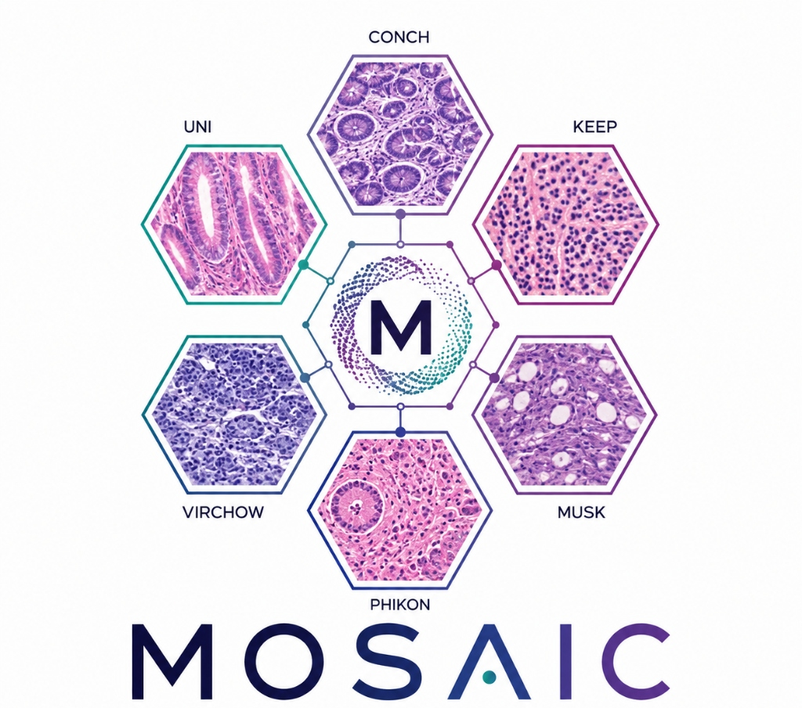

Do independently trained pathology foundation models learn the same thing?
Central Hypothesis: Independently trained pathology foundation models learn different coordinate systems over a shared underlying morphological manifold.
If that holds, representations should be alignable, semantic neighbourhoods should survive alignment, features should transfer between models, and a downstream classifier should be able to live inside one shared space.
How similar are the representation spaces of 18 pathology encoders measured by 7 similarity metrics?
Does the pretraining objective (vision SSL vs vision-language) drive latent geometry more than architecture?
Can GCCA, Procrustes, optimal transport and other methods align several models into one shared latent space?
Does the aligned space improve downstream MIL classification on 14 molecular and morphological tasks?
Does a classifier trained on one encoder generalise to another encoder's features through the shared space?
NSCLC subtyping, breast IDC-vs-ILC, staging. Directly visible in tissue architecture — saturates near AUC 0.97, separates encoders poorly.
9 mutation predictions (TP53, KRAS, PIK3CA, GATA3, MAP3K1, STK11). Weak morphological signal, AUCs 0.6–0.75 — these discriminate between representations.
Downstream task performance across 18 encoders evaluated on CPTAC molecular prediction benchmarks using ABMIL and TransMIL aggregators.
Cross-encoder representation similarity matrices computed across patch-level and slide-level foundation models.